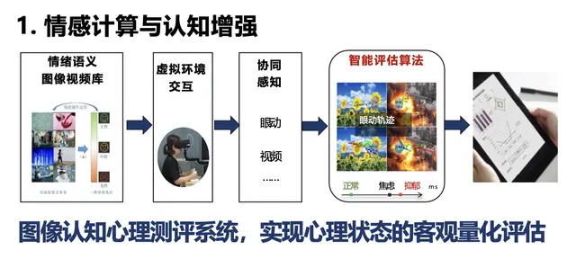
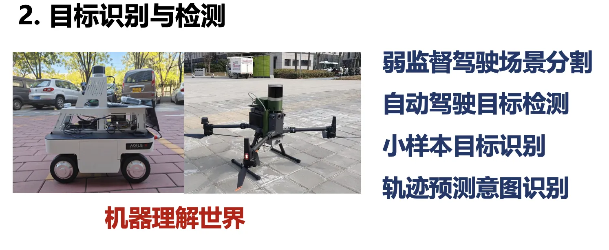
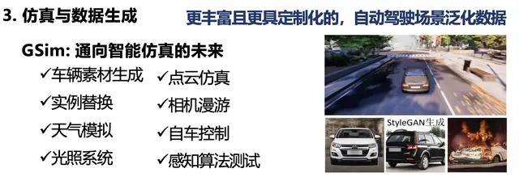
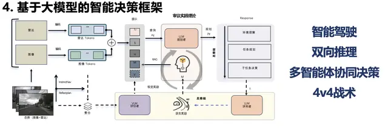

Research Directions

构建基于图像认知的心理测评系统，实现心理状态的客观量化评估，融合多模态信号进行情感识别与人格计算。
Affective Computing
自动驾驶3D目标检测、小样本目标识别、弱监督驾驶场景分割、轨迹预测与意图识别，在KITTI连续三年获得第一。
Object Detection
GSim智能仿真平台：车辆素材生成、实例替换、天气模拟、光照系统、点云仿真、相机漫游与感知算法测试。
Simulation & Generation
智能驾驶双向推理、多智能体协同决策，让机器学习人的思维方式，实现人机混合智能。
LLM for Decision-MakingLatest News
马惠敏教授团队研究成果荣获北京市科学技术奖，充分肯定了团队在智能视觉与自动驾驶领域的突出贡献。查看获奖证书 →
Xiao Zhang, Tianyu Hu, Juntao Lyu, Qiankun Liu, Qianchuan Zhao, Mingyi Li, Kang Li, Songde Han, Jiansheng Chen, Huimin Ma, "Autonomous driving system based on dual process theory and deliberate practice theory," Nature Communications, 2026. Nature官网 → · 下载PDF →